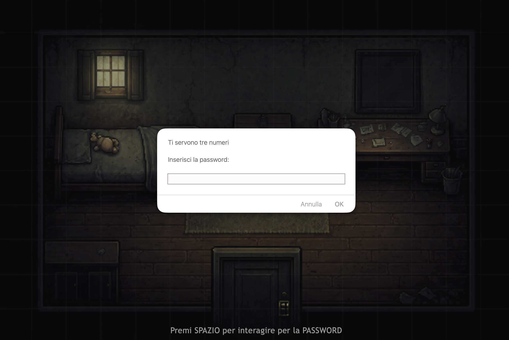
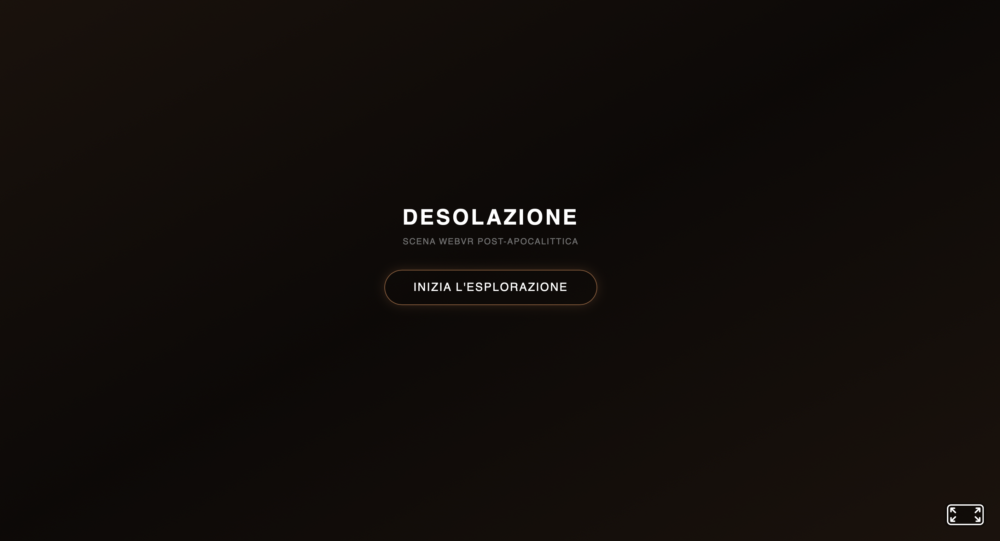
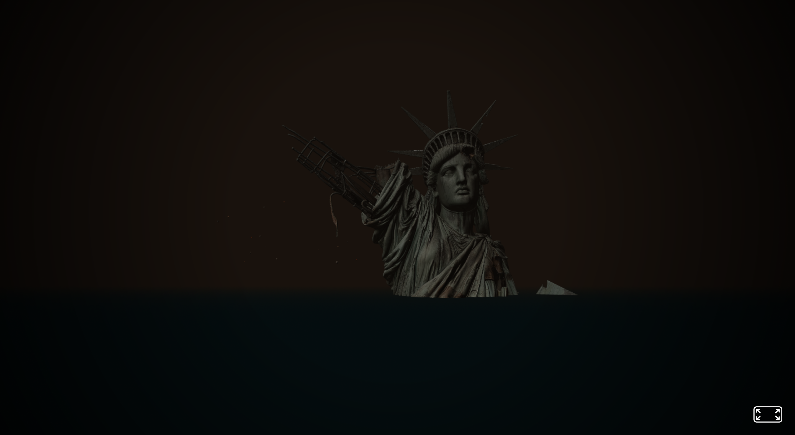
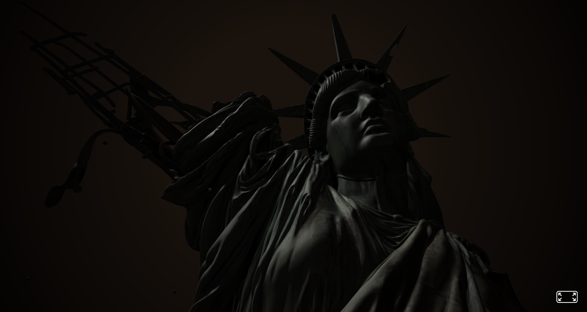
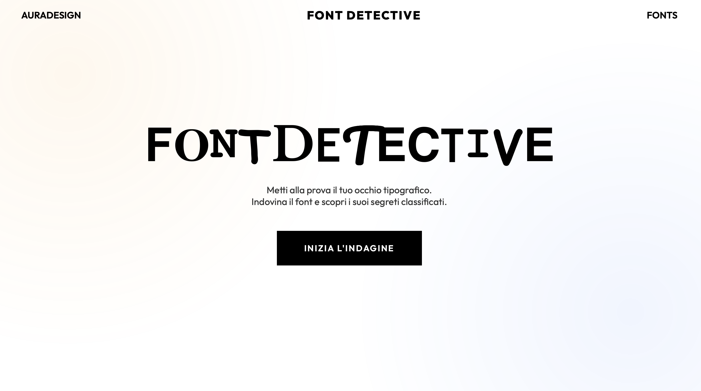
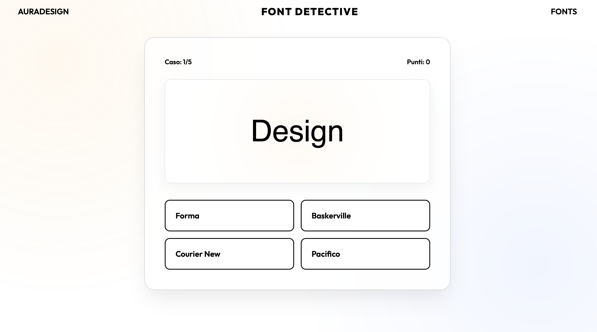
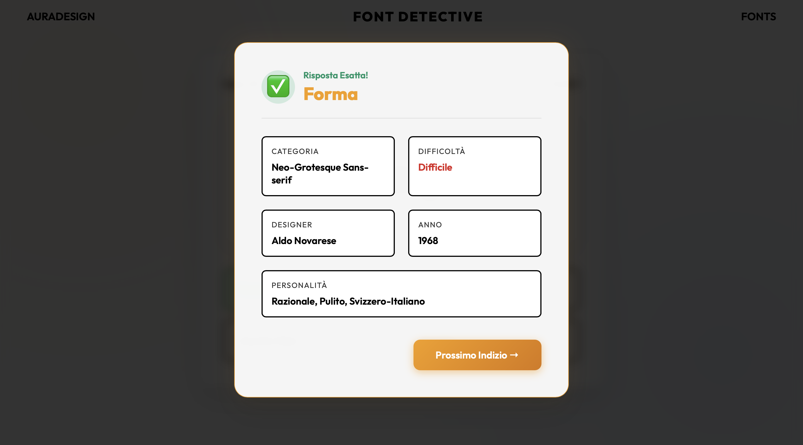
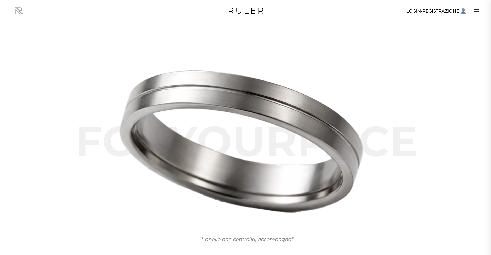
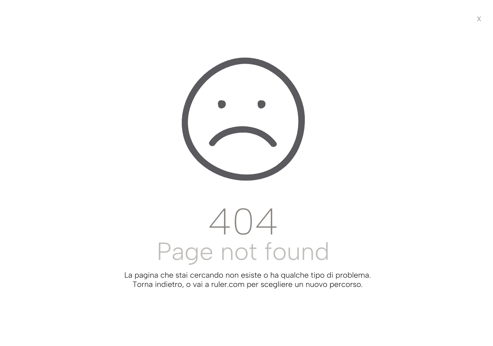
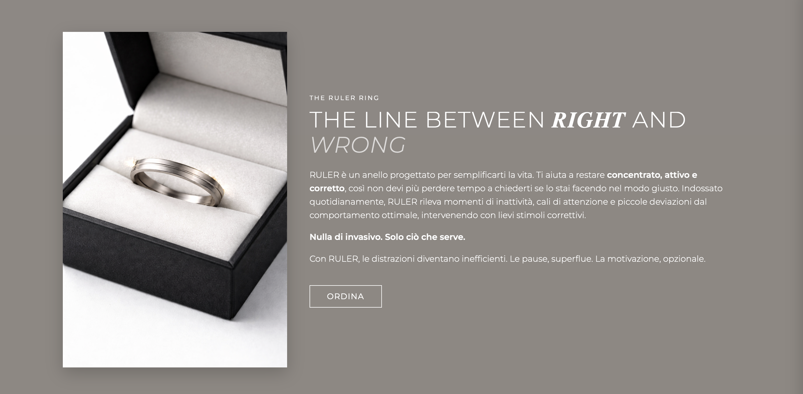

WEB
DESIGN
Progettazione e sviluppo di interfacce web moderne e funzionali
Escape your mind
2026Descrizione
Escape your mind è un'esperienza web interattiva in stile "escape room". Sviluppato interamente con tecnologie web standard (HTML5, CSS3, JavaScript Vanilla) per il front-end e Node.js con Socket.IO per la gestione in tempo reale. Il giocatore si ritrova all'interno di stanze misteriose dove deve muoversi utilizzando la tastiera e interagire con l'ambiente circostante per risolvere enigmi e trovare la via d'uscita.



Scena WebVR
2026Descrizione
"Desolazione" è una scena virtuale 3D interattiva in stile post-apocalittico realizzata con A-Frame. L'utente viene immerso in un'atmosfera cinematografica drammatica con una vignetta scura, fitta nebbia cinerea e particelle fluttuanti (sabbia, cenere e braci ardenti) che simulano una tempesta. Al centro si staglia una statua colossale parzialmente sommersa, soggetta a una lenta oscillazione che simula il moto ondoso, inquadrata dal basso per accentuarne la monumentalità.



Font Detective
2026Descrizione
Font Detective è un quiz interattivo per web browser progettato per testare la conoscenza tipografica e l'attenzione ai dettagli dell'utente. I giocatori devono identificare vari tipi di font (serif, sans-serif, monospace e corsivi) a partire da singole lettere o parole e scoprire l'anatomia e la storia di ciascun carattere tipografico. Sviluppato interamente in HTML, CSS e JavaScript Vanilla, utilizza un archivio JSON locale per caricare dinamicamente le domande e le specifiche dei caratteri.



RULER
2026Descrizione
Ruler è una landing page interattiva e satirica per un anello intelligente fantascientifico progettato per forzare la produttività ed eliminare la distrazione. Sviluppata con HTML5 e CSS3 personalizzato, la pagina presenta un design elegante, minimalista e d'impatto con contrasti netti in bianco e nero. L'esperienza d'uso è studiata per promuovere un prodotto distopico che "non controlla, accompagna" l'utente verso il proprio massimo rendimento quotidiano.



TAVOLE DI BASIC DESIGN
2026Descrizione
Tavole di Basic Design è uno studio visivo geometrico finalizzato ad allenare l'occhio e la mano ai principi fondamentali della percezione visiva. Senza l'uso di testi o immagini tradizionali, le quattro tavole esplorano prossimità, contrasto, gerarchia e spazio bianco, comunicando concetti strutturali immediati e leggibili in un secondo.
TYPO-POETRIES
2026Descrizione
Typo-poetries è un'esplorazione di tipografia cinetica in cui singole parole evocative (legate al vocabolario del collasso e della crisi) prendono vita attraverso il tempo e il movimento tipografico. Il progetto unisce animazioni dinamiche realizzate in Figma a sonorità ambientali, creando un'esperienza sinestetica pura in cui la forma e il suono si fondono per dare consistenza al significato tipografico.
Programmi Usati
TESTO POETICO ALGORITMICO
2026Descrizione
Testo Poetico Algoritmico (L'officina delle parole) è un'applicazione web interattiva ideata come dispositivo di allacciamento poetico. L'utente viene guidato da un algoritmo generativo o può comporre autonomamente i propri testi selezionando parole da un vocabolario fluttuante. Sviluppato in HTML5, CSS3 avanzato e JavaScript vanilla, presenta un'interfaccia minimale dal sapore editoriale con morbide sfumature cromatiche di sfondo.


I COLORI DELLA CATASTROFE
2026Descrizione
I colori della catastrofe è un'esplorazione visiva e sonora che indaga le tonalità e le sfumature della crisi e del collasso. Attraverso animazioni tipografiche e dinamiche di colore sviluppate su Figma e Adobe Premiere Pro, il progetto crea una narrazione sinestetica in cui il colore e la parola si fondono per esprimere visivamente il concetto di catastrofe.
Programmi Usati
Copy & Subvert
2026Descrizione
Esercitazione teorico-pratica incentrata sui temi del Culture Jamming e del Subvertising. Il progetto si sviluppa in due fasi distinte realizzate interamente su Figma. La prima prevede la copia fedele al pixel dell'homepage di donaldjtrump.com per analizzarne la struttura, i pesi tipografici e la gerarchia visiva. La seconda interviene sui contenuti originali per sovvertire i messaggi di propaganda politica, trasformandoli in un contromessaggio visivo e verbale che scardina la realtà mantenendo intatto l'impianto grafico originale.